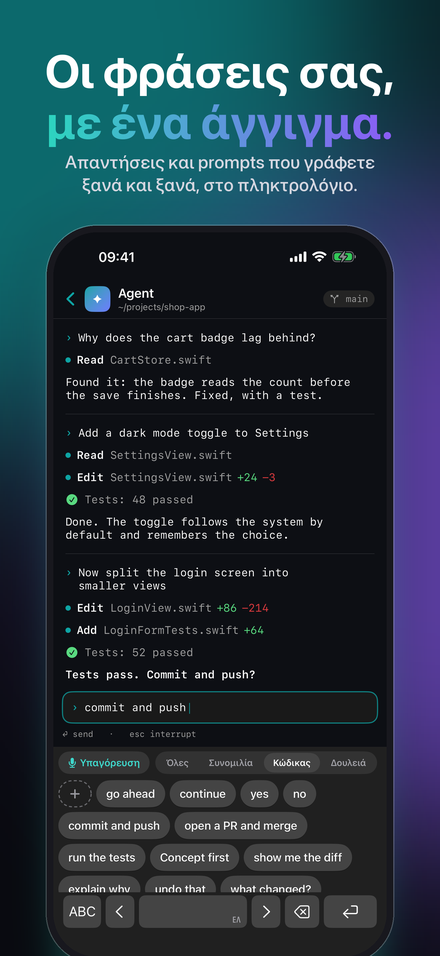
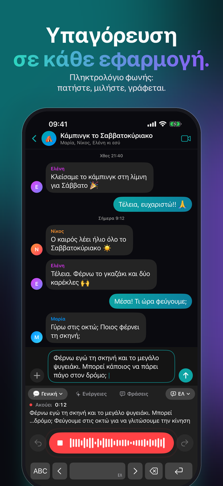
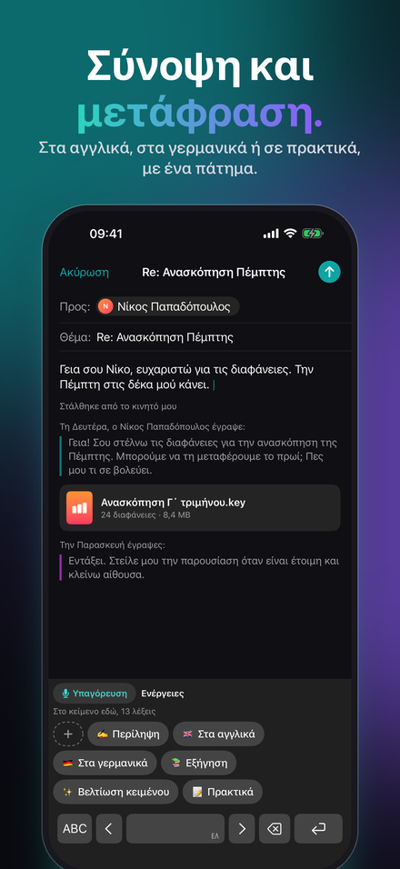
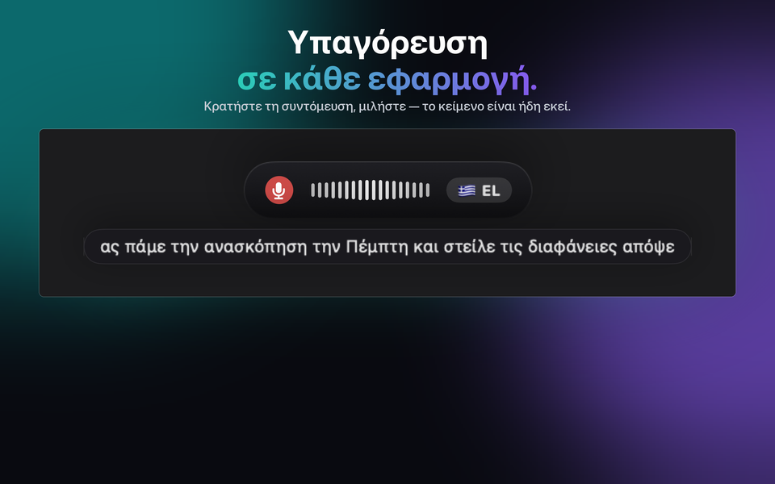
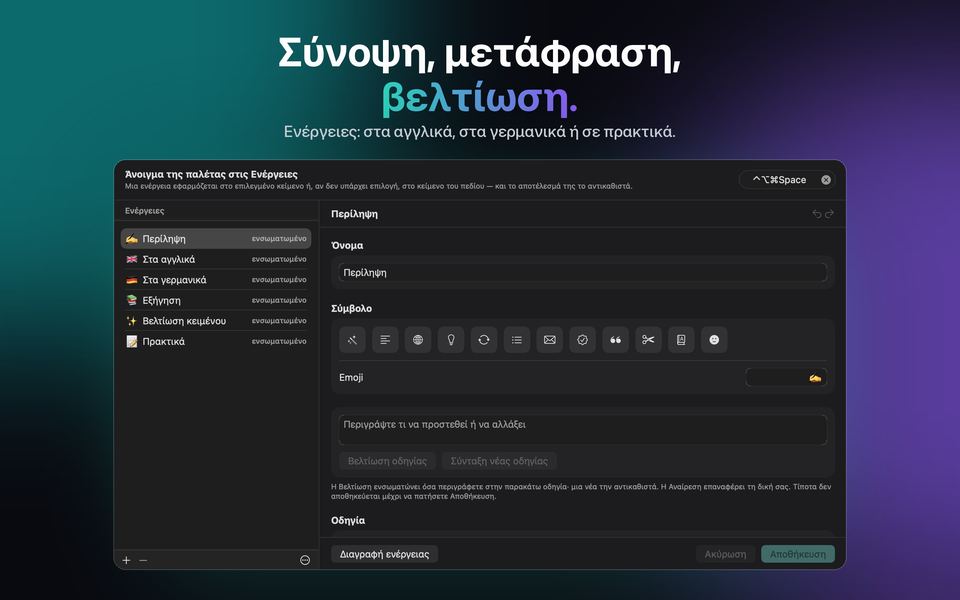
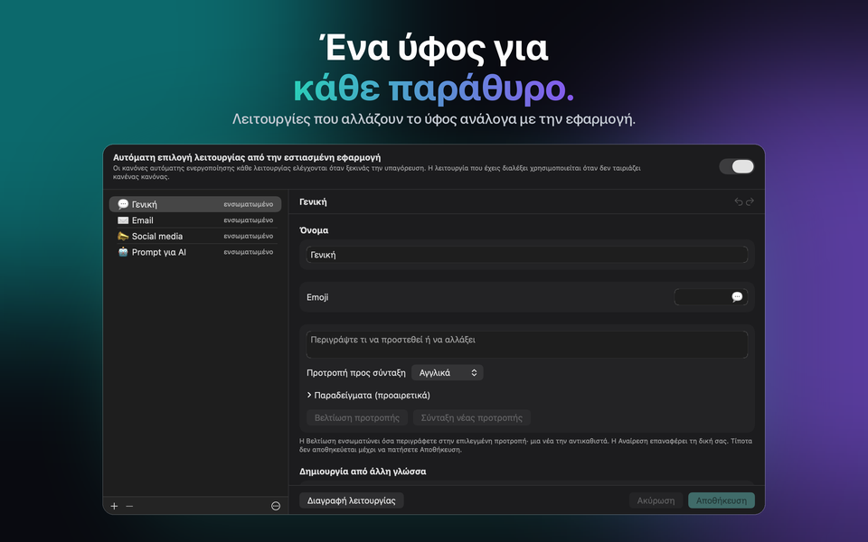

Για Mac, Windows, iPhone και iPad
Υπαγόρευση και φωνή σε κείμενο
Εσύ μιλάς. Αυτό γράφει. Το JustTalk είναι υπαγόρευση για το Mac σας: φωνή σε κείμενο σε κάθε εφαρμογή, γυαλισμένο από ΤΝ.



Απόκτησε το JustTalk
Η ίδια εφαρμογή σε κάθε πλατφόρμα, με τις ίδιες λειτουργίες, τις ίδιες γλώσσες και την ίδια επιλογή ανάμεσα σε τοπικό και cloud. Η καθεμία αγοράζεται μία φορά από το δικό της κατάστημα: το App Store για Mac, iPhone και iPad, το Microsoft Store για Windows. Σε Mac, iPhone και iPad, το iCloud κρατά ίδιες τις λειτουργίες, τις φράσεις, τις ενέργειες και τις ρυθμίσεις σας· τα Windows συμμετέχουν μέσω του αρχείου ρυθμίσεων.
macOS
macOS 14 ή νεότερο, Apple silicon ή Intel. Υπαγόρευσε σε οποιαδήποτε εφαρμογή με μια συντόμευση.
Windows
Windows 10 (1809) ή νεότερο, x64, x86 ή ARM64. Ο εγκαταστάτης είναι υπογεγραμμένο MSIX.
iPhone & iPad
iOS και iPadOS 26 ή νεότερο. Ένα πληκτρολόγιο από το οποίο υπαγορεύεις σε κάθε εφαρμογή, και ένα φύλλο κοινοποίησης για ηχογραφήσεις που ήδη έχεις.
Τι κάνει
Το λογισμικό υπαγόρευσης συνήθως σάς δίνει ένα απομαγνητοφωνημένο κείμενο και αφήνει το φινίρισμα σε εσάς. Το JustTalk τελειώνει τη δουλειά: πατήστε ένα πλήκτρο συντόμευσης, μιλήστε, και η καθαρισμένη πρόταση επικολλάται κατευθείαν στην εφαρμογή που ήδη χρησιμοποιείτε — χωρίς αλλαγή παραθύρου, χωρίς αντιγραφή από αλλού.
Γραμμένο, όχι απλώς απομαγνητοφωνημένο
Ένα γλωσσικό μοντέλο αφαιρεί τα «εε» και διορθώνει τη στίξη. Αυτό που καταλήγει στο πεδίο είναι κάτι που θα πληκτρολογούσατε κι εσείς.
Τοπικά ή στο cloud, εσύ αποφασίζεις
Το Whisper και ένα τοπικό μοντέλο τρέχουν εξ ολοκλήρου στον δικό σου υπολογιστή, δωρεάν και εκτός σύνδεσης. Ή σύνδεσέ το με Google, OpenAI, Groq, Mistral ή Anthropic με δικό σου κλειδί και πλήρωσέ τους απευθείας.
100 γλώσσες
Αναγνωρίζονται καθώς μιλάτε, ακόμα και μέσα στην ίδια πρόταση. Καμία ρύθμιση να αλλάξετε όταν εναλλάσσεστε.



Πόσο κοστίζει
Η εφαρμογή είναι μία πληρωμή. Τα μοντέλα είναι δωρεάν αν τα τρέχετε τοπικά, και επί πληρωμή ανά χρήση αν χρησιμοποιείτε πάροχο cloud — χρεώνεστε από αυτόν, όχι από εμάς. Δέκα λεπτά υπαγόρευσης την ημέρα μέσω Groq είναι αρκετά κάτω από ένα δολάριο τον μήνα με τις τιμές τους του Σεπτεμβρίου 2026· μια βαριά μέρα 45 λεπτών είναι περίπου ένα έως τρία δολάρια. Όλα είναι ξεκλείδωτα για επτά ημέρες, χωρίς τίποτα να κρατείται πίσω και χωρίς να χρειάζεται κάρτα.
Μετά τη δοκιμή, η δωρεάν έκδοση συνεχίζει να λειτουργεί κάθε μέρα με 2 υπαγορεύσεις έως 30 χαρακτήρων η καθεμία, 5 φράσεις, 5 ενέργειες και, σε iPhone και iPad, 5 διορθώσεις πληκτρολόγησης. Το JustTalk Pro τα κάνει όλα απεριόριστα με μία μόνο πληρωμή — με μια υπηρεσία AI στο cloud, η χρήση περιορίζεται τότε μόνο από την πρόσβασή σας σε αυτήν. Δεν είναι συνδρομή, και δεν υπάρχει τίποτα προς ακύρωση.
Πώς το χρησιμοποιούν οι χρήστες
Email και συνομιλίες
Η General καλύπτει το καθημερινό κείμενο· οι άλλες λειτουργίες έχουν τον δικό τους τόνο και λεξιλόγιο, και η κατάλληλη μπορεί να επιλέγεται αυτόματα ανάλογα με την εφαρμογή στην οποία υπαγορεύετε.
Συσκέψεις
Καταγράψτε και τις δύο πλευρές μιας κλήσης και πάρτε το απομαγνητοφωνημένο κείμενο ολόκληρης της συζήτησης, όχι μόνο το δικό σας μέρος.
Φράσεις και Ενέργειες
Ό,τι γράφετε ξανά και ξανά είναι ένα πάτημα μακριά, στο πληκτρολόγιο του iPhone και στην παλέτα του υπολογιστή. Μια Ενέργεια ξαναγράφει την επιλογή, ή όλο το πεδίο, με μια οδηγία που γράφετε εσείς — ή το μοντέλο για εσάς.
Πληκτρολόγηση στο iPhone
Το πληκτρολόγιο JustTalk έχει και πλήρη γράμματα, και η «Διόρθωση πληκτρολόγησης» τακτοποιεί ό,τι γράψατε όταν σταματάτε: τυπογραφικά λάθη, κεφαλαία, στίξη — ποτέ τη διατύπωσή σας.
Ηχογραφήσεις
Φωνητικό σημείωμα, διάλεξη, συνέντευξη: ανοίξτε ή μοιραστείτε το με το JustTalk και πάρτε την απομαγνητοφώνηση, σε κάθε πλατφόρμα.
Τοπικά ή στο cloud — αποφασίζετε εσείς, κι εμείς λέμε πόσο κοστίζει το καθένα
Το JustTalk είναι η εφαρμογή γύρω από τα μοντέλα, όχι τα ίδια τα μοντέλα. Τρέξτε τα τοπικά — Whisper και ένα τοπικό γλωσσικό μοντέλο μέσω llama.cpp, Ollama ή LM Studio — και τίποτα δεν ανεβαίνει, καμία χρέωση, κανένας λογαριασμός. Αυτός ο δρόμος είναι πλήρης επιλογή, όχι επίδειξη, και θέλει ένα Mac ή PC με άφθονη μνήμη· σε iPhone και iPad το αναγνωριστικό της ίδιας της συσκευής κάνει την υπαγόρευση. Ή συνδέστε έναν πάροχο cloud με ένα κλειδί που δημιουργείτε εσείς: πιο γρήγορο και πιο ακριβές, και σας χρεώνει απευθείας για τη χρήση. Καμία ανάλυση, καμία παρακολούθηση, κανένας λογαριασμός μαζί μας ούτε σε αυτή την περίπτωση. Η πολιτική απορρήτου λέει ακριβώς τι στέλνει κάθε επιλογή. Στην εφαρμογή, η ενότητα «Τα δεδομένα σας και η AI» δείχνει ανά πάσα στιγμή πού πηγαίνουν η φωνή και το κείμενό σας, και η δήλωση για την AI λέει ποια ΤΝ κάνει τι.
Υπαγορεύστε σε 100 γλώσσες, μεταξύ των οποίων αγγλικά, γερμανικά, γαλλικά, ισπανικά, ιταλικά, πορτογαλικά, ιαπωνικά, κορεατικά, ελληνικά, ουκρανικά και ρωσικά.
JustTalk
Δωρεάν δοκιμή, ξεκλείδωμα με μία αγορά. Mac, Windows, iPhone και iPad, 100 γλώσσες, και τίποτα δεν ανεβαίνει αν δεν το ζητήσεις.